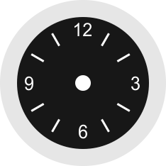
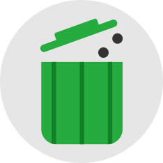

| MORAL CHALLENGE? Yuk Mulai..!! |
#10 |
MENJADI TELADAN BAGI ORANG SEKITARMenjadi teladan bukan berarti sok benar dan ingin dipandang baik. Melainkan adalah cara kita menginspirasi orang untuk berubah ke arah yang positif! |
|  | MORAL CHALLENGE? Yuk Mulai..!! |
#9 |
BERSIKAP SOPAN KEPADA TEMANPerlakuan kita terhadpa teman mungkin kurang sopan karena sudah akrab. Namun, tidak ada salahnya kita lebih menjaga sikap kepada teman agar bisa memengaruhi mereka juga! |
| MORAL CHALLENGE? Yuk Mulai..!! |
#8 |
DIAM DAN TERSENYUMLAH SAAT DISAKITIDiam dan tersenyumlah ketika orang lain menyakiti kita! Diam merupakah pembuktian kedewasaan seseorang. Tersenyum merupakan ketulusan dan kerelaan disakiti! |
| MORAL CHALLENGE? Yuk Mulai..!! |
#7 |
MENGAMALKAN 5S DALAM KEHIDUPANSenyum, salam, sapa, sopan, dan santun. 5 hal sederhana bukti keramahan seseorang. Biasakan diri kita untuk mengamalkan 5S! Agar hidup terasa lebih indah! |
| MORAL CHALLENGE? Yuk Mulai..!! |
#6 |
BELAJAR MENGUCAP TERIMAKASIHBerterimakasih adalah tanda kita menghargai pemberian orang. Baik benda atau bantuan. Cobalah mengucap terimakasih setiap kali orang membantumu! |
|  | MORAL CHALLENGE? Yuk Mulai..!! |
#5 |
BELAJAR DISIPLINNegara maju didukung manusianya yang unggul dan disiplin. Untuk mewujudkan Indonesia maju, ayo kita belajar disiplin! Hal sederhana adalah disiplin waktu! |
| MORAL CHALLENGE? Yuk Mulai..!! |
#4 |
MENTAATI PERATURAN DAN NORMAKalau kita sering melanggar aturan, baik aturan sekolah, lalu lintas, dan lainnya, cobalah untuk mulai mentaati aturan dan norma yang ada! |
| MORAL CHALLENGE? Yuk Mulai..!! |
#3 |
BERHENTI DARI KEBIASAAN BURUKAyo beranikan diri untuk melakukan perubahan! Ubahlah kebiasaan burukmu! Ganti dengan kebiasaan baik! |
| MORAL CHALLENGE? Yuk Mulai..!! |
#2 |
BERAMAL SETIAP KALI IBADAHMari banyak beramal setiap kali kita ibadah! Belajarlah memberi! tidak hanya sekedar menerima! |
|  | MORAL CHALLENGE? Yuk Mulai..!! |
#1 |
AKSI NYATA BUANG SAMPAHAmbilah setiap sampah yang kamu lihat saat beraktivitas lalu buang pada tempat sampah terdekat! |
Tentang Kami
Inspire The Moral (Spiral) merupakan website yang bertujuan untuk menginspirasi semua orang mulai dari yang muda sampai yang tua. Dan juga memberikan Moral Challenge untuk Melakukan aksi nyata yang bermoral dan memberi inspirasi serta teladan bagi banyak orang. Selengkapnya.. |
Ikuti Kami |